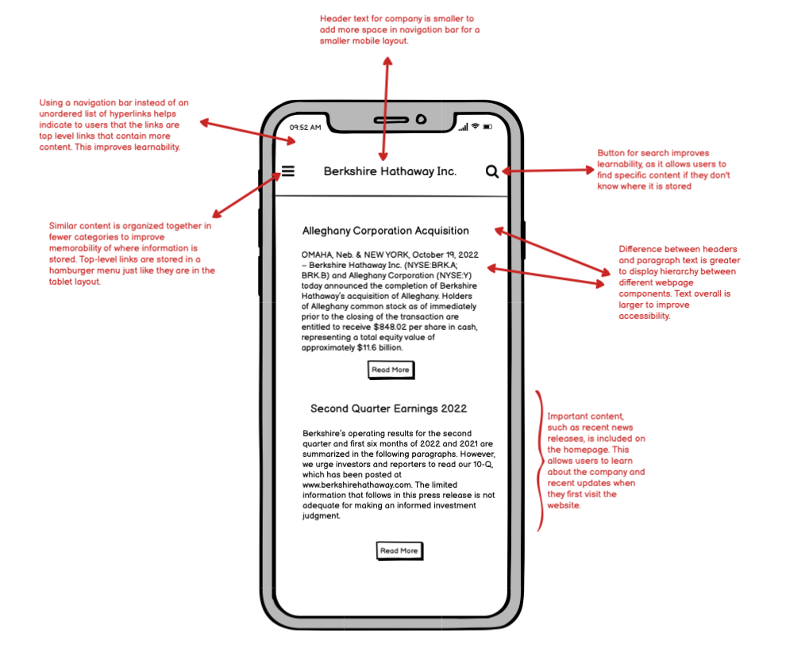

Berkshire Hathaway Website Responsive Redesign
Background
For this project, I found a poorly designed website and analyzed its issues with respect to memorability, learnability, usability, and accessibility. Next, I wireframed and prototyped a redesigned website for desktop, tablet, and mobile layouts. Finally, I built and deployed the redesigned website using HTML and CSS.
Website Usability Problems
I chose to look at the Berkshire Hathaway Website, linked here . I chose this website because there are glaring issues with the accessibility and organization of the homepage. Below is a screenshot of the homepage.

Usability Problems
Here are some usability problems with the website I noticed:
Accessibility Problems
Next, I used WebAIM WAVE to detect possible accessibility problems. The main accessibility problem that WAVE found was that the text that indicates when a section was updated is too small. I agree that this is an issue, as I personally had trouble reading. A related problem that WAVE identified was that the headings are stored as an unordered list and are not represented as heading elements; this makes the website very hard to navigate and negatively affects the accessibility. Finally, WAVE pointed out that there is no lang attribute value and that none of the page regions have ARIA landmarks; these both negatively affect the user experience of anyone trying to navigate the page with assistive technology.
Visual Redesign
Low-Fidelity Wireframing
During the redesign process, I first created lo-fi wireframes to address the usability problems I found above. I created wireframes for desktop, tablet, and mobile layouts.
Desktop

Tablet

Mobile
Visual Design Style Guide
Next, I defined a visual design guide that displays the main colors, typography, and reusable components for the redesigned webpage.

High-Fidelity Prototyping
I then designed high-fidelity prototypes for my redesigned webpage for desktop, tablet, and mobile displays. Some displays included multiple prototypes in order to fully display the interactive functions of my webpage, such as the navigation bar.Desktop


Tablet


Mobile

Responsive Redesign
Finally, I used my wireframes, style guide, and prototypes to design a responive webpage that addresses the original usability and accessibility issues I found with the Berkshire Hathaway website. The website can be found here . Below are screenshots of the website for desktop, tablet, and mobile displays.Desktop

Tablet

Mobile